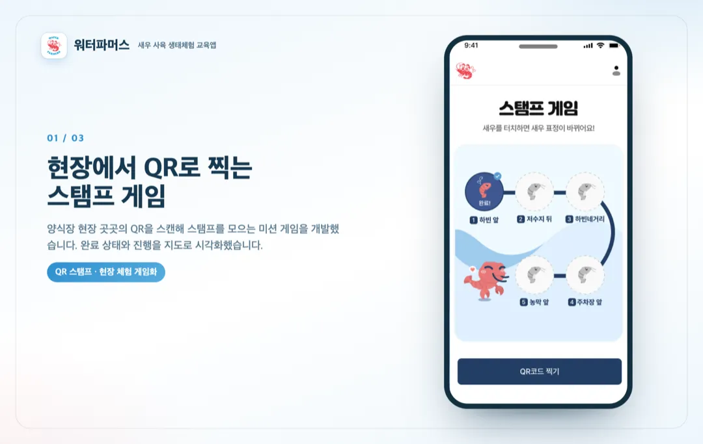
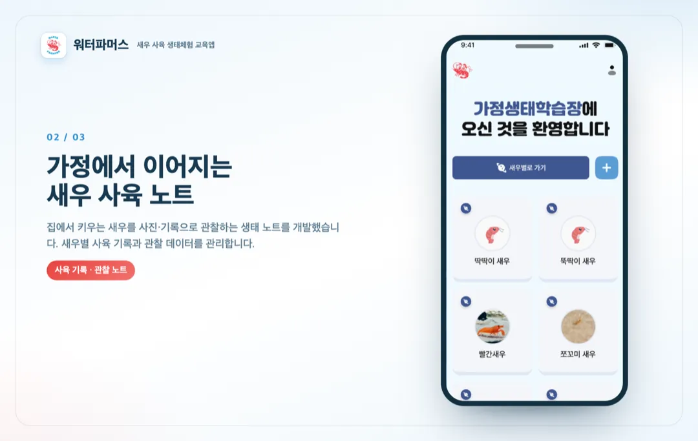
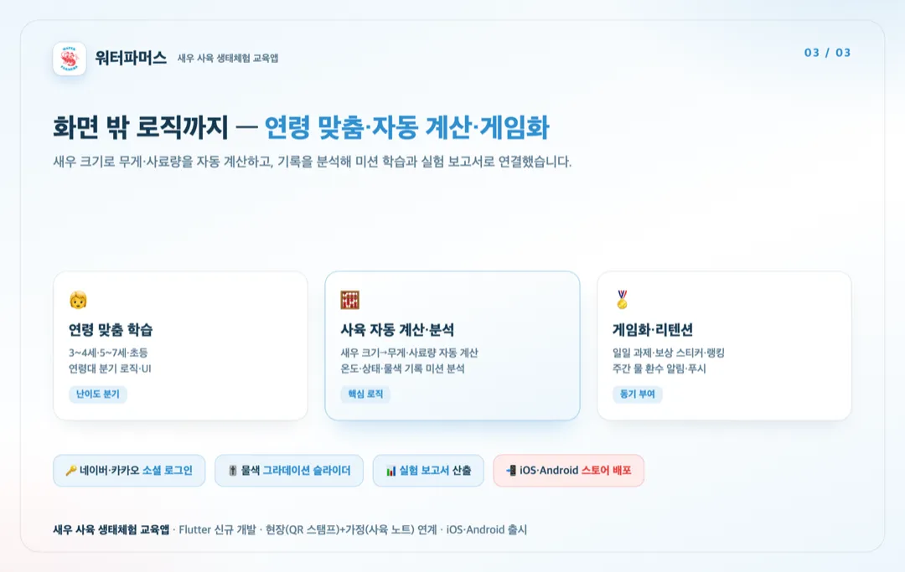

홈 / 포트폴리오 / WaterFarmers — 생태체험 교육 앱
앱 개발
새우 사육 생태체험 교육앱 워터파머스 Flutter iOS·Android 신규 개발
참여 기간 · 2025.09 ~ 2025.10



포트폴리오 소개
- 어린이가 직접 새우를 키우며 수생태계를 배우는 체험형 교육앱 '워터파머스'를 Flutter로 iOS·Android 신규 개발했습니다.
- 양식장 현장 방문 체험과 가정 내 사육 활동을 연계해, QR 스탬프 게임·미션 학습·사육 기록으로 생태 학습을 이어가도록 만들었습니다.
작업 범위
- Flutter 기반 iOS·Android 앱 신규 개발
- 네이버·카카오 소셜 로그인
- QR 스캔 기반 현장 스탬프 게임
- 연령대(3~4세/5~7세/초등) 분기 로직·UI
- 새우 사육 기록(사진 업로드·관찰)과 새우 생태 노트
- 미션 학습 로직(온도·상태·물색 기록 분석), 물색 그라데이션 슬라이더 UI
- 새우 크기 입력 시 무게·사료량 자동 계산
- 사용자 기록 기반 실험 보고서 산출
- 게임화(일일 과제·보상 스티커·랭킹), 주간 물 환수 알림·푸시
- iOS/Android 스토어 배포
주요 업무 및 기능
- 현장: QR 스캔 스탬프 게임으로 양식장 곳곳의 미션 수행
- 가정: 새우 사육 기록·관찰 노트로 학습 연계
- 학습 로직: 연령 분기, 무게·사료량 자동 계산, 기록 분석·실험 보고서
- 리텐션: 게임화(스티커·랭킹), 물 환수 푸시
- 연동/배포: 소셜 로그인, iOS·Android 출시
주안점
- 현장(오프라인 체험)과 가정(온라인 사육)을 하나의 학습 흐름으로 연결
- 어린이 대상에 맞는 연령 분기 UI와 게임화
- 사육 기록을 학습(미션·보고서)으로 연결하는 로직
문제점
- 양식장 현장 체험이 일회성으로 끝나, 가정에서 학습이 이어지지 않았습니다.
- 어린이 대상이라 연령에 맞는 난이도·UI와 흥미 유발(게임화)이 필요했습니다.
- 사육 활동을 '학습'으로 연결할 기록·분석 구조가 필요했습니다.
프로젝트 목표
- 현장(QR 스탬프)과 가정(사육 노트)을 연계한 체험형 교육앱을 Flutter로 개발.
- 연령 분기·게임화로 어린이 몰입을 높이고, 기록을 미션·실험 보고서로 연결.
- iOS·Android 동시 출시.
주안점
- 현장-가정 연계 학습 흐름.
- 어린이 친화 연령 분기 UI·게임화.
- 기록→분석→보고서로 이어지는 학습 로직.
프로젝트 성과
현장+가정 연계 체험 교육앱 개발
QR 스탬프 게임(현장)과 새우 사육 노트(가정)를 연계한 체험형 교육앱을 Flutter로 iOS·Android 신규 개발했습니다.
학습 로직·자동 계산 구현
연령대 분기 UI와 함께, 새우 크기로 무게·사료량을 자동 계산하고 기록을 분석해 미션 학습·실험 보고서로 연결했습니다.
게임화·소셜 로그인·출시
보상 스티커·랭킹·물 환수 푸시로 리텐션을 높이고, 네이버·카카오 로그인을 붙여 iOS·Android에 출시했습니다.
비슷한 프로젝트를 계획 중이신가요? 아이디어 단계여도 괜찮습니다.
프로젝트 문의하기 →